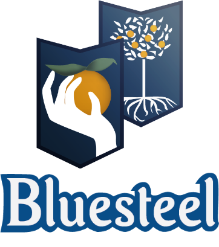

About Us
brand story

1445. That’s a long time ago. Belgium was still part of the Netherlands and the Netherlands still had plenty of colonies. And as true tourists the Dutch often brought wonderful and odd things over from their excursions abroad. So it came to pass that exotic spices became readily available in our parts. All to the benefit of our beloved monks.
The Original Belgian Wheat Beer. Almost 600 years ago
in the Belgian village, a band of monks experimented by adding oddball botanicals from halfway around the world to their traditional wheat beer.
Our special method, inspired by their creation, is a beer with a refreshing flavor and captivating aroma, unlike any in the world. Let the refreshing citrus and earthy coriander alleviate the stresses of modern living and whisk you to another place entirely.
Help you get the most from your activity. Products are beneficial for everyone who had a hard time today it could be a worry or stress in this society. Finish a perfect day with Blue steel beer.